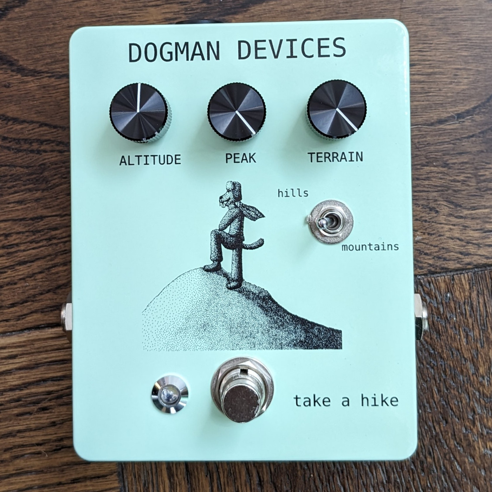
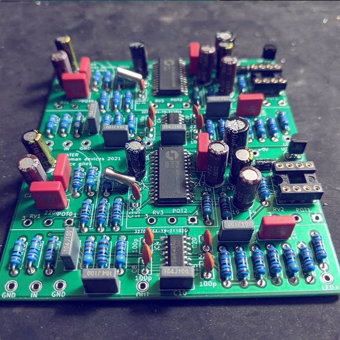

ELECTRONICS
Computer Hardware
I have always enjoyed working with hardware.
I've built a desktop computer, carried out some rudimentary laptop upgrades and repairs, and built a RetroPie with a Raspberry Pi. However, my work with hardware doesn't end on this higher level of abstraction.
Musical Devices
While computer harware is fun, designing things on a circuit-level is even better.
I am particularly interested designing electronics for music. I have designed a large range of analog and digital effect pedals.


I have also designed and built contact and condenser microphones, and I am interested in creating synthesizers.
I find the fact that hardware is tangible quite appealing. As fun and interesting as it is to make intangilbe things, it is satisfying to have a physical object which I designed and built. This is especially true with guitar effects.